소통의 비극 - 장갑전함 빅토리아(HMS Victoria) 호의 침몰
게시: 2021-06-28T07:29:06+09:00
아래 사진은 노급 전함 이전 시대의 장갑 전함(pre-dreadnought)인 프랑스 전함 마세나(Massena)입니다. 나폴레옹 휘하 2인자의 이름을 딴 전함 치고는 무게 중심 균형이 안 잡혀 안정성이 떨어졌고 그 때문에 포격 정확도도 문제가 많았던 실패작이라고 평가를 받는 전함입니다. 미야자키 하야오 감독의 만화영화에 나오는 전함들은 대부분 이런 모양새를 하고 있는데, 그럴 수 밖에 없는 것이 하야오 감독의 만화영화들은 대부분 19세기 말 국적 불명 유럽 세계를 배경으로 하기 때문에, 그 당시의 전함이라면 당연히 대부분 저렇게 생겼습니다.
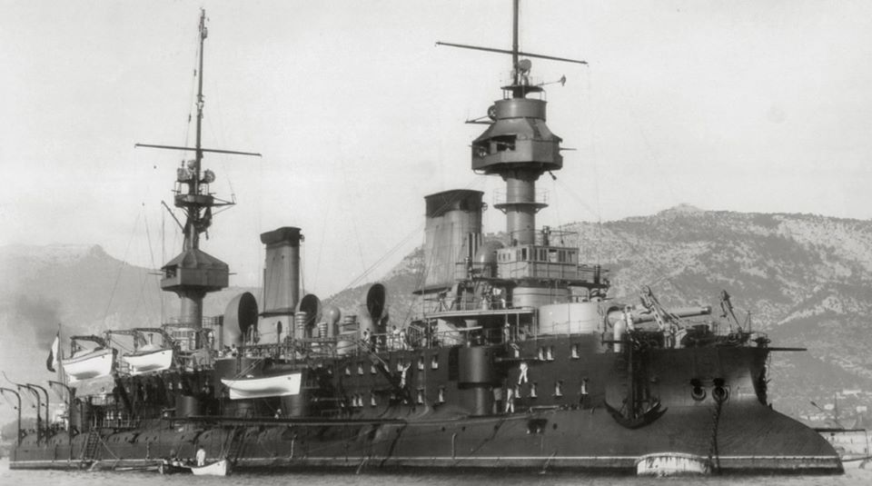
(마세나 호입니다. 저 쇠종처럼 생긴 선체 옆에 숭숭 뚫린 구멍은 별게 아니라 그냥 창문입니다. 지중해의 뜨거운 햇살 아래 저 시커먼 쇳덩어리는 냄비처럼 뜨거워졌고, 저 무쇠 함체 속의 수병들은 그야말로 끓는 냄비 속의 개구리 신세였는데, 통풍은 오로지 저 좁은 창문을 통해서만 이루어졌습니다. 그나마 배 안쪽에는 창문이 아예 없는 구역도 많았습니다. 저 아래에 이야기하는 빅토리아 호의 침몰에는 이런 환기 부족 문제도 꽤 중요한 원인이 되었습니다.) 특히 저 마세나 호는 마치 충각(ram)처럼 툭 튀어나온 이물 구조가 특이합니다. 모양만 보면 혹시 고대 그리스 로마 시절 삼단노선처럼 충각 전술이라도 쓰려는 건가 오해하기 쉬운데, 실제로 충각 전술을 염두에 두고 만들어진 구조입니다. 이건 마세나 호만 특이한 것이 아니라, 19세기 말 장갑 전함들은 대부분 충각을 갖추고 있었습니다. 이는 1866년 오스트리아-이탈리아 간에 벌어진 리사(Lissa) 해전에서 오스트리아 해군 장갑 전함이 이탈리아 군함을 들이받아 재미를 본 사례가 있기 떄문이었습니다. 특히 당시 유럽 각국이 앞다투어 장갑 군함들을 생산해내면서, 포격전을 통해 상대를 격침시키는 것이 점점 어려워졌고, 그 때문에라도 장갑이 없는 수면 아래 약한 선체를 들이받는 충각 전술이 매우 중요하게 생각되었습니다.
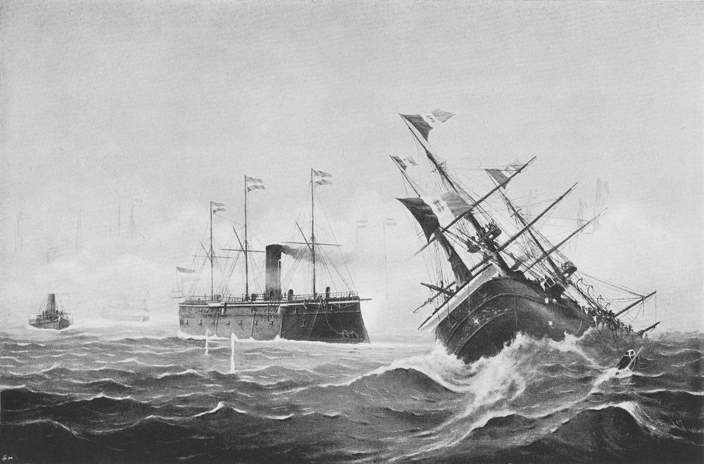
(1866년 리사 해전에서 오스트리아 해군 전함 Erzherzog Ferdinand Max에게 충각 공격을 당한 뒤 침몰하는 이탈리아 장갑 순양함 Re d'Italia ) 그러나 오늘 이야기는 19세기 말 장갑 전함들의 충각 전술 이야기가 아니라 단순명료한 의사 소통이 얼마나 중요한지에 대한 이야기입니다. 리사 해전 이후 실제로 충각으로 격침된 전함은 영국 해군의 장갑 전함 빅토리아(HMS Victoria) 밖에 없었는데, 이는 1893년 훈련 도중 같은 영국 해군 전함 캠퍼다운(HMS Camperdown)에게 사고로 들이받힌 것이었습니다. 그리고 그 사고는 의사 소통이 잘 안되었기 때문에 발생한 것이었는데, 이는 꼭 통신 기술의 문제가 아니라 권위와 언어의 복잡한 문제이기도 했습니다.
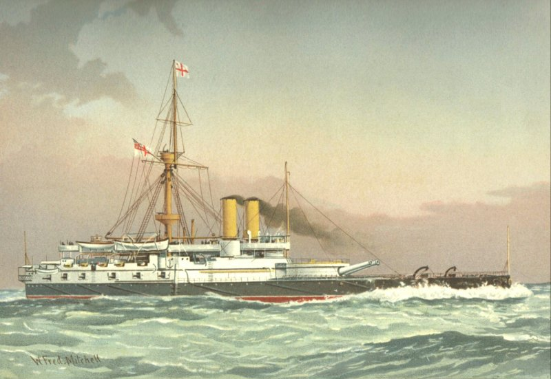
(1887년의 빅토리아 호의 모습. 앞갑판에 달린 저 육중한 2연장 포탑이 인상적이네요.) 1869년 11월 17일은 세계적으로 매우 중요한 날이었습니다. 바로 수에즈 운하(Suez Canal)가 개통된 날이거든요. 이는 당시 유럽 뿐만 아니라 전세계의 정치 경제 군사 문화 등에 지대한 영향을 끼쳤는데, 당장 가장 큰 영향을 받은 것은 바로 영국 지중해 함대의 중요성이었습니다. 수에즈 운하의 개통에 따라 영국의 아시아 식민지들로 통하는 가장 중요한 통로가 지중해가 되었는데, 지중해에는 프랑스와 이탈리아 등 쟁쟁한 잠재적 적국의 전함들이 득실거렸습니다. 따라서 영국 해군 지중해 함대는 대서양 함대나 도버 해협 함대보다 훨씬 더 중요한 함대가 되었고 규모도 가장 커지게 되었습니다. 이 중요한 함대에는 당연히 당시 최신예 장갑 전함들이 배치되었고 가장 유능한 제독이 지휘관으로 배정되었습니다. 바로 해군 중장(Vice-Admiral) 트라이언(Sir George Tryon) 경이었습니다. 트라이언 경은 자상하다기보다는 무척 권위주의적인 성격의 소유자로서, 부하들이 자신의 명령에 즉각 그대로 복종할 것을 요구하는 스타일의 매우 엄격한 상관이었습니다. 그는 자신이 내리는 명령이 부하들에게는 납득이 안 가는 것일지라도 토를 달지 말고 그대로 수행할 것을 원했습니다. 그러면서도 그는 자신이 거느리는 고위 장교들, 그러니까 함장들과 부사령관 등이 자신의 명령이 어떤 의미로 내리는 것인지 '능동적으로' 해석하여 판단하기를 바랬습니다. 전형적인 오만한 영국 귀족 스타일이었던 것이지요.
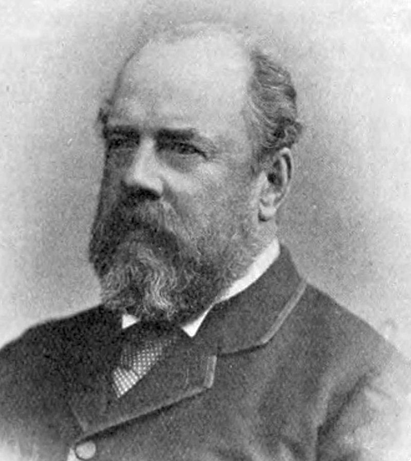
(트라이언 제독입니다. 직장 상사가 이런 사람이면 정말 피곤합니다.) 비극적 사고가 있던 1893년 6월 22일, 트라이언은 전함 8척과 순양함 3척 등 총 11척의 장갑함을 2열 종대로 거느리고 레바논 트리폴리(Tripoli) 앞바다에서 정기 기동 훈련을 하고 있었습니다. 트라이언 본인은 기함 빅토리아(HMS Victoria, 1만1천톤급)를 타고 있었고, 그의 종대는 빅토리아를 포함하여 총 6척으로 구성되어 있었습니다. 나머지 5척은 캠퍼다운(HMS Camperdown, 1만1천톤급)에 승선한 함대 부사령관 마컴(Albert Hastings Markham) 소장이 이끌고 있었고요.
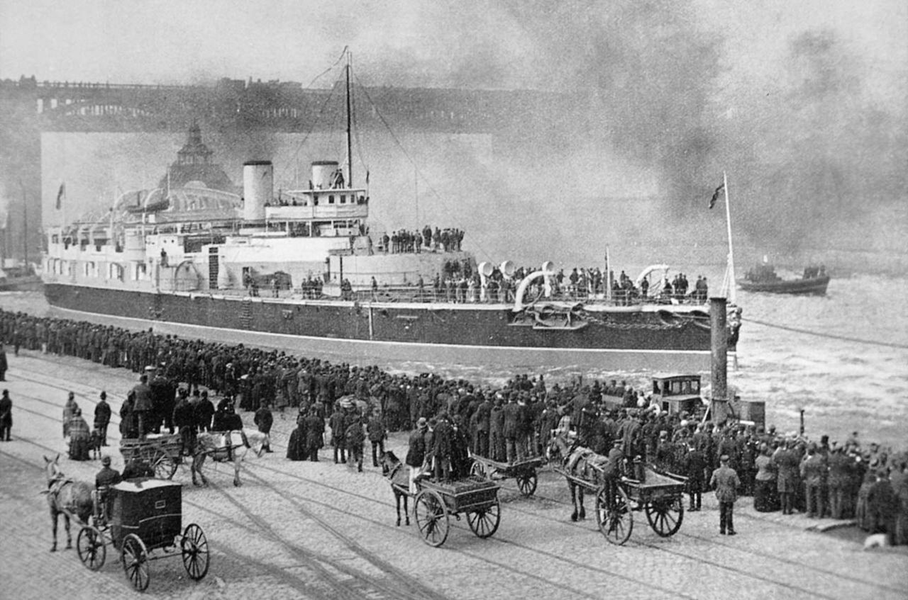
(빅토리아를 구경하러 모인 군중입니다. 당시 최신예 전함이었습니다.)
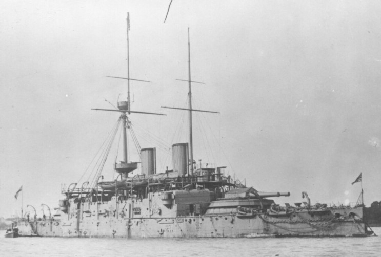
(가해자인 HMS Camperdown입니다. 1885년의 모습입니다.) 트라이언 제독은 그 날 훈련을 마치고 닻을 내리기 전 마지막 연습할 기동에 대해서 몇몇 부하 장교들에게 이야기를 해주었습니다. 그들은 2열 종대로 해안을 향해 가다가 각 종대가 서로를 향해 안쪽으로 줄줄이 180도 선회해서 역방향으로 조금 더 항해한 뒤, 마지막으로 90도 좌현으로 꺾어서 닻을 내리고 밤을 보낼 계획이었습니다. 그런데, 이 기동을 위해 2열 종대를 지을 때, 이 두 종대의 간격을 1km로 좁힐 것을 명령했습니다. 이건 부하들에게 상당히 뜻 밖의 명령이었습니다. 왜냐하면 당시 전함들의 기동성으로는 180도 선회를 하기 위해서는 적어도 종대 한 줄당 550m의 공간이 필요했기 때문이었습니다. 따라서 이 두 종대 사이에 최소한의 안전거리인 370m 거리를 유지하기 위해서는 두 종대 사이의 거리는 180도 선회 이전에 적어도 1500m는 떨어져 있어야 했습니다. 사실 이 거리도 너무 위험할 정도로 가까운 것이었고, 부하들은 적어도 1800m의 거리가 있는 것이 상식적이라고 생각했습니다. 그런데 두 종대 사이의 거리를 1000m로 줄여라 ? 어리둥절해진 부하 장교들 중 용감한 부하 2명이 정말 1000m 거리로 좁히는 것이 맞냐고 물었는데, 두 번 말하는 것을 몹시 싫어했던 트라이언 제독은 무뚝뚝한 어조로 맞다고 대답했습니다. 제독이 짜증난 것에 약간 겁을 먹은 부하 장교들은 일단 시키는 대로 1000m 간격으로 두 종대 사이를 좁혔습니다. 이제 문제의 그 어려운 동작, 그 두 종대가 서로를 향해 선회하며 U턴을 해야 하는 순간이 되었습니다. 영국 해군의 깃발 신호책에는 평소 자주 쓰이는 동작이나 교신 내용을 간단한 깃발 몇 개로 표시할 수 있도록 미리 정의된 것이 많았습니다. 그러나 트라이언 제독이 하려던 기동은 실제 전투 대형에서 흔히 사용하는 것이 아니었으므로, 영국 해군의 깃발 신호책에는 간략 신호가 없었습니다. 그러다보니 빅토리아의 신호 장교는 트라이언 제독의 아래 문구를 두 문장으로 나누어서 보내야 했습니다. "제2 종대는 함대의 순서를 유지하며 줄줄이 16포인트(180도) 우현으로 변침하라" "Second division alter course in succession 16 points to starboard preserving the order of the fleet." "제1 종대는 함대의 순서를 유지하며 줄줄이 16포인트(180도) 좌현으로 변침하라" "First division alter course in succession 16 points to port preserving the order of the fleet."
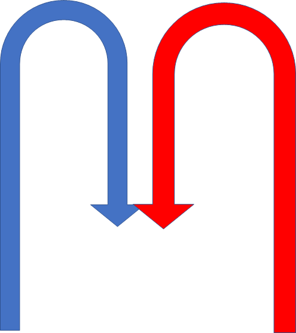
(부하 장교들이 이해했던 트라이언의 의도) 이 긴 신호를 받고 각 종대는 상당히 혼란스러워 했습니다. 이렇게 두 종대 사이의 간격이 좁은데 서로를 향해 선회했다가는 서로 충돌할 것이 아닌가 ? 그런데 우물쭈물하기도 좀 그랬습니다. 이들은 해안을 향해서 똑바로 진진하고 있었으므로 빨리 U턴 하지 않으면 해안에 좌초할 지경이었던 것입니다. 그래도 제2 종대를 이끄는 부사령관 마컴 소장은 이 위험한 명령을 어떻게 받아들여야 할지 몰라 주저하고 있었습니다. 먼저 명령을 받은 제2 종대가 명령을 받았다는 신호(acknowledgement)를 보내지 않자, 트라이언은 짜증이 났습니다. 그는 다음과 같은 신호를 보냈습니다. "뭘 기다리는 것인가?" "What are you waiting for?" 이건 전 함대에 대고 마컴을 질책하는 신호였습니다. 이렇게 모욕에 가까운 신호를 받자 마컴은 정신이 번쩍 들었고 일단 받은 명령을 글자 그대로 수행하기로 했습니다. 그래서 이 두 종대는 서로를 향해 위험천만한 선회를 시작했습니다. 그때까지만 해도 이 두 종대의 선두함인 빅토리아와 캠퍼다운의 장교들은 마지막 순간에 트라이언 제독이 뭔가 다른 명령을 내릴 것이라고 믿고 있었습니다. 그러나 점점 충돌각으로 치닫고 있는 두 전함 간의 거리가 좁혀지는 것을 보며 초조히 새 명령을 기다리던 장교들은 끝끝내 새로운 명령이 내려오지 않자 기겁을 했습니다. 마지막 순간에 빅토리아의 함장인 버크(Maurice Bourke) 대령은 스크루를 역회전하게 해달라고 다급하게 3번이나 간청했습니다. 대체 무슨 생각에서였는지 트라이언은 멍하니 있다가, 마지막 순간에야 이제 무척이나 가까이 온 캠퍼다운을 향해 이렇게 외쳤다고 합니다. "후진하라, 후진해 !" "Go astern! Go astern!" 하지만 이 명령은 이미 너무나도 늦은 것이었습니다. 바로 다음 순간, 캠퍼다운의 이물이 빅토리아의 이물 측면을 들이받았습니다. 당연히 캠퍼다운의 충각(ram)이 빅토리아의 흘수선 아래에 2.7m 직경의 큰 구멍을 냈습니다.
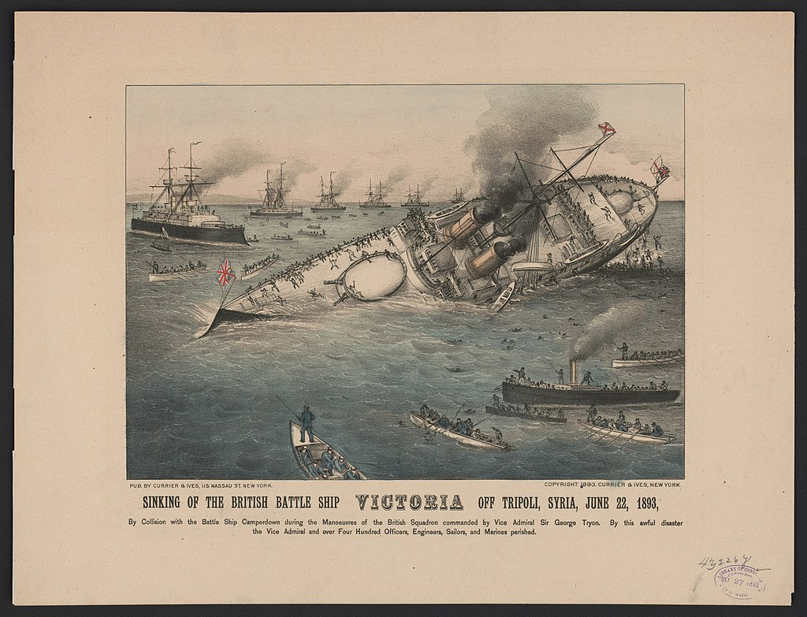
트라이언의 후진하라는 명령은 더 안 좋은 결과를 냈습니다. 이 두 전함은 서로 후진하여 충돌 이후 2분 만에 서로에게서 떨어졌는데, 이 때문에 뚫린 구멍으로 대책없이 바닷물이 콸콸 쏟아져 들어갔습니다. 위에서 잠깐 언급했듯이, 당시 장갑 전함은 측면에 뚫린 작은 창문 외에는 아무런 환기 장치가 없었고, 무더운 6월의 지중해에서 함내는 그야말로 찜통이나 다름없었습니다. 특히 그 날은 목요일로서 전통적으로 수병들에게 휴식이 주어지던 날이었습니다. 그러다보니 전투 상황에서라면 닫혀있어야 할 갑판 아래 각 격실들의 밀폐문도 환기를 위해 다 열려 있었습니다. 그런 상황에서 선창에서 바닷물이 콸콸 쏟아져 들어오니 빅토리아는 정말 빠른 속도로 가라앉기 시작했습니다. 그래도 주변에 다른 군함들이 뻔히 보고 있었으니 구조선은 충분했고 수병들이 헛되이 빠져 죽지는 않아도 되었습니다. 뒤를 따르던 전함들은 이 사고와 그로 인해 침수되는 빅토리아를 보고는 즉각 보트들을 내려 구조에 나섰습니다. 그러나 트라이언 제독은 이 사고의 피해를 너무 과소평가했습니다. 그는 빅토리아가 침몰할 정도의 상황에 있다고 보지 않았고, 배를 즉각 해안 쪽으로 항진하도록 했습니다. 급한 대로 침몰을 막고자 해변 모래톱에 좌초시킬 생각이었습니다. 그런데 구조랍시고 몰려드는 보트들을 보고 방해가 된다고 생각했는지 또 짜증을 내며 '물러서라'는 신호를 올렸습니다. 하지만 충돌 이후 8분 만에 선수가 완전히 물에 잠기고 선미의 스크루가 수면 위로 올라와 헛돌 정도로 침수는 급격히 진행되었습니다.
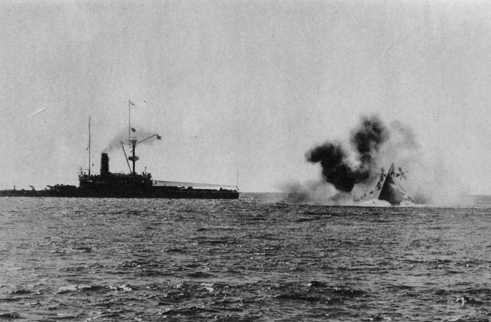
(침몰하는 빅토리아. 뒤따르던 HMS Collingwood에서 찍은 사진입니다. 왼쪽의 군함은 가해자 HMS Camperdown이 아니라 HMS Nile 입니다.) 한편 사고 직후, 빅토리아의 함장 버크 대령은 직접 선창에 내려가 상황을 본 뒤, 이 전함을 구할 방법이 없다고 판단했습니다. 그는 전체 선원들에게 집합 명령을 내리고는 갑판에서 바깥쪽을 바라보고 정렬하게 한 뒤 탈출 명령을 내렸습니다. 그리고나서 빅토리아는 충돌 이후 13분 만에 전복되며 완전히 침몰했습니다. 이 사고로 358명이 익사했고 357명이 구조되었습니다. 그나마 이렇게 절반의 수병들이 구조된 것은 뒤따르던 콜링우드(HMS Collingwood)의 함장 젠킨스(Jenkins) 덕분이었습니다. 콜링우드는 마침 증기 엔진이 달린 대형 보트를 내려놓고 있는 상태였는데, 젠킨스 함장은 '물러서라'는 트라이언 제독의 명령을 무시하고 사고 현장에 접근하여 물 속에 뛰어든 수병들을 건져내었던 것입니다. 나중에 벌어진 조사에서도 이 사고 원인에 대해서는 뚜렷한 결론을 내지 못했습니다. 함장 버크 대령은 구조되었지만, 명령을 내린 당사자인 트라이언 제독이 사망했기 때문에 대체 트라이언 제독이 무슨 생각을 하고 있었던 것인지 알 수가 없었기 때문이었습니다. 다만, 트라이언 함장이 내린 두 줄의 신호문을 분석한 결과, 다음과 같은 추정을 할 수 있었습니다. 여러분은 트라이언 제독의 명령문 중 '함대의 순서를 유지하며'(preserving the order of the fleet)라는 표현의 뜻을 이해하십니까 ? 나중에 해군 조사 위원회는 이 표현이 종대 내에서의 전함 순서를 유지하라는 것이 아니라, U턴 이후에도 좌현 종대는 좌현이 되고 우현 종대는 우현이 되도록 한 종대는 다른 종대의 바깥 쪽으로 우회하라는 뜻이라고 해석했습니다. 이건 굳이 갖다 붙인 해석이 아니라, 실제로 영국 해군 전집 제7권(The Royal Navy' Vol VII)의 415–426 페이지에 나오는 해석이라고 합니다.
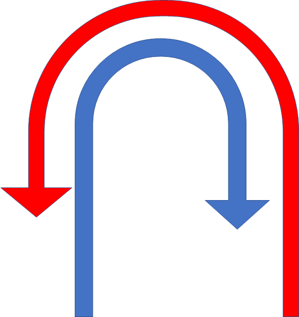
(사고 이후 조사관들이 추정한 트라이언의 의도) 글쎄요. 만약 트라이언 제독이 정말 원했던 것이 위의 두번째 그림이라고 해도, 최소한 어느 종대가 바깥 쪽으로 선회해야 하는지는 알려줬어야 한다고 봅니다. 그리고 두 종대가 서로 충돌이 분명한 상황에 이르도록 아무런 추가 명령을 내리지 않은 것은 분명히 트라이언의 잘못입니다. 무엇보다, 위험한 상황에서 이견을 제시할 여지를 남기지 않을 정도로 경직된 의사 전달 체계를 강요했던 평소 트라이언의 행실이 가장 문제였습니다. 특히 가장 아쉬운 것은 '함대의 순서를 유지하며'(preserving the order of the fleet)라는 표현이었습니다. 만약 트라이언의 의도가 정말 위의 2번째 화살표와 같은 것이었다면, 저렇게 모호한 표현 대신 '제1 종대는 바깥쪽으로 크게 우회, 제2 종대는 안쪽으로 작게 우회하여 제1, 2 종대는 최초의 좌우 위치를 유지할 것' 등 분명한 표현을 써야 했습니다. 단지 몇 마디 더 하는 것이 귀찮아서 3백명이 넘는 수병들을 죽음으로 내몬 것은 너무나 어처구니 없는 일입니다. 그런데 더욱 아쉬운 일은 이런 불분명한 커뮤니케이션으로 인한 참사가 지금도 여전히 일어나고 있다는 것이지요. 제2차 세계대전 초반 영국 아시아 함대의 프린스 오브 웨일즈(HMS Prince of Wales)가 일본 항공대에게 격침당했던 것도, 당시 영국 함대 사령관과 싱가폴 기지와의 의사 소통이 명확하지 않아서 싱가폴 기지에서 출격한 영국 항공대가 공중 지원을 해주지 못했기 때문이었습니다. 침몰한 빅토리아의 함장 버크를 비롯한 전체 장교 및 수병들은 모두 군사재판에 피고로 회부되었습니다. 그러나 군사재판 결과 이들은 명령을 따랐을 뿐이라며 모두 무죄를 선고 받았고, 버크 대령은 영전하여 이런저런 관직에 올랐습니다. 다만 46세의 젊은 나이에 요절했네요.
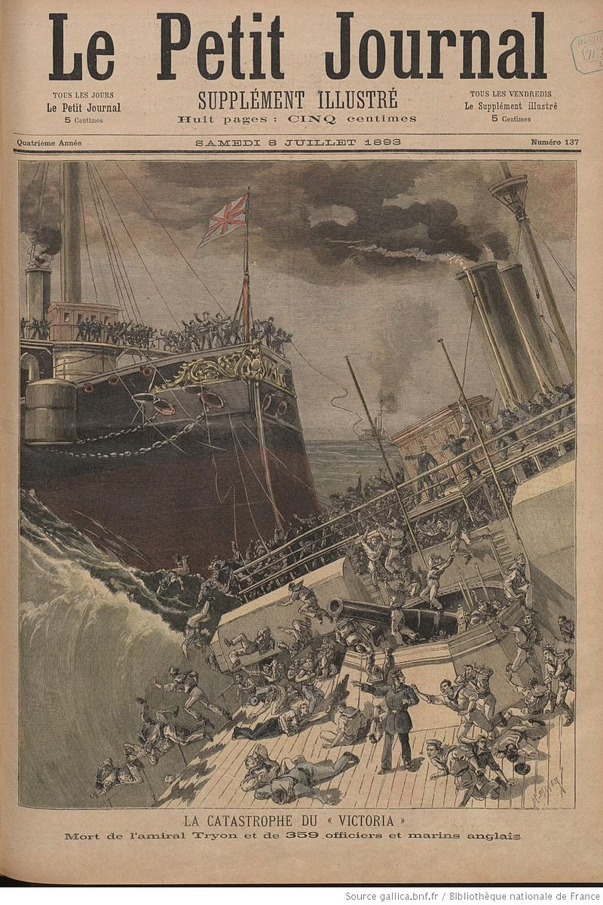
(프랑스 신문에 난 빅토리아의 침몰 사건입니다. 당시 유럽 전체가 떠들썩할 정도로 큰 사건이었습니다. 특히 영국 해군은 이 사건으로 영국 전함들의 취약점이 잠재적 적군에게 노출되지 않을까 노심초사했으나, 사건 전모를 대중에게 공개하기로 했습니다. 선진국이 다르긴 다르네요.) Source : en.wikipedia.org/wiki/HMS_Victoria_(1887) en.wikipedia.org/wiki/Maurice_Bourke